ການຜ່າເກີດແບບວາງແຜນມາກ່ອນ
ການຜ່າເກີດແມ່ນຕົວເລືອກທີ່ແພດແນະນຳເມື່ອແມ່ມີຄວາມສ່ຽງທີ່ເກີດເອງບໍ່ໄດ້, ເຂັ່ນວ່າມີຄວາມສ່ຽງຕໍຄວາມປອດໄພຂອງແມ່ຫຼືລູກ. ຫຼືອາການຜິດປົກກະຕິຂອງເດັກທີ່ແພດພົບໂດຍການອັນຕ້າຊາວແລະການກວດອື່ນໆໃນລະຫວ່າງການຕັ້ງຄັນອາດຈະມີຄວາມຈຳເປັນທີ່ຕ້ອງກຳນົດວັນຜ່າເກີດ. ໂດຍທົ່ວໄປສ່ວນທີ່ຜ່າຕັດແມ່ນມີຫຼາຍສາເຫດດັ່ງນີ້:

ການຜ່າເກີດແບບສຸກເສີນ
ແມ່ບາງຄົນຕ້ອງຜ່າເກີດສຸກເສີນເມື່ອມີອາການແຊກຊ້ອນຢ່າງກະທັນຫັນ.ຈຳ ເປັນຕ້ອງໄດ້ຜ່າອອກມາເພື່ອແກ້ໄຂບັນຫາທັນທີເພື່ອບໍ່ເປັນອັນຕະລາຍຕໍ່ແມ່ແລະເດັກຕົວຊີ້ບອກທີ່ຈຳ ເປັນຕ້ອງມີການຜ່າຕັດສຸກເສີນມີດັ່ງນີ້:
 
